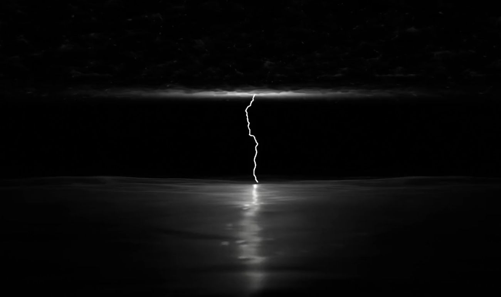

Go Anywhere
Roles: 3D Modeling
Skills: Blender, BLOSM
Go Anywhere is a documentary about ocean crossing (not yet released) by Chainsaw Reaction Studios. I helped with 3D modeling certain scenes and created accurate topographical map animations of different cities using OpenStreetMap data.